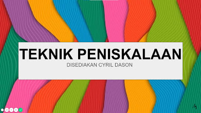
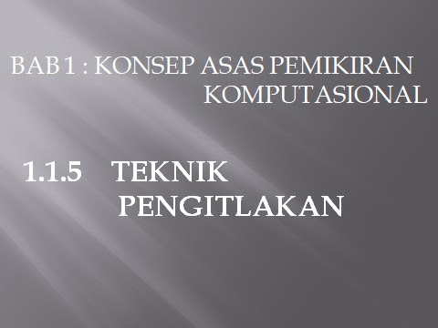

Pegecaman Corak.
Pegecaman Corak.
Website dibuat daripada kumpulan 1. Ahli-ahli kumpulan: Shaziya,Alma,Putri. Kelas: 1 AMAN
Terdapat 4 Teknik Pemikiran Komputasional
Pemecahan masalah kepada beberapa bahagian kecil.
Video pemahaman Teknik leraian.Meneliti corak yang sama untuk meyelesaikan masalah dengan lebih berkesan.
Meninggalkan aspek-aspek kurang penting dan fokus kepada aspek yang lebih penting.
 .Pembinan model dalam bentuk formula,teknik,peraturan atau langkah dalam menyelesaikan masalah.
